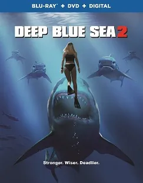

The genetics
As in the first film, the monsters are sharks made smarter in a laboratory. The pharmaceutical billionaire Carl Durant has genetically altered the brains of five bull sharks to raise their intelligence, so that they hunt in coordinated attacks; the alterations also mask the alpha female's pregnancy, and her pups add to the danger. Durant is also experimenting on himself with a gene-altering liquid to make himself more intelligent, out of fear that technology will one day rule the world. He is the film's villain: a selfish man who ignores warnings and leaves others to die, and who is eaten by his own creation, while the conservationist Misty, horrified by the experiments, is the heroine. The film ends with the engineered sharks loose in the ocean. Critics dismissed it as a cheap B movie; real neuroscience offers no genetic changes that could turn sharks into strategists or boost human intelligence with an injection.
How genetics is portrayed
- Overall portrayal of genetics
- negative Genetic enhancement is the hubristic project of a selfish tycoon that leads to a massacre, and the film ends with the threat at large.
- Outcome of the genetic intervention
- negative The engineered sharks and their hidden pups kill most of the crew, and the survivors escape into the ocean.
- Carl Durant
- villain Aim: power, personal (negative). The pharmaceutical billionaire alters the brains of bull sharks and injects himself with a gene-altering liquid to boost intelligence out of a fear of technology; he ignores warnings, abandons others to save himself and is killed by his alpha shark.
The story
In this stand-alone sequel to Deep Blue Sea, the shark conservationist Dr. Misty Calhoun is invited by the pharmaceutical billionaire Carl Durant to Akhelios, his secret sea-based research facility. Durant has genetically altered the brains of five bull sharks to make them more intelligent, and he wants Misty's opinion on the alpha female, Bella, who is behaving strangely. Misty realises that Bella is pregnant, something the genetic alterations had hidden from tests. When a shark rams a boat into an electrical box, the facility is damaged and flooded, and Bella's newborn pups and the adult sharks hunt the crew one by one. The trainer Trent reveals that Durant has also been injecting himself with a gene-altering formula to boost his own intelligence, driven by a fear that technology will one day rule the world. Durant abandons others to save himself and is killed by Bella. Misty, Trent and the technician Aaron escape and destroy the facility, but Bella and her pups survive in the open ocean.